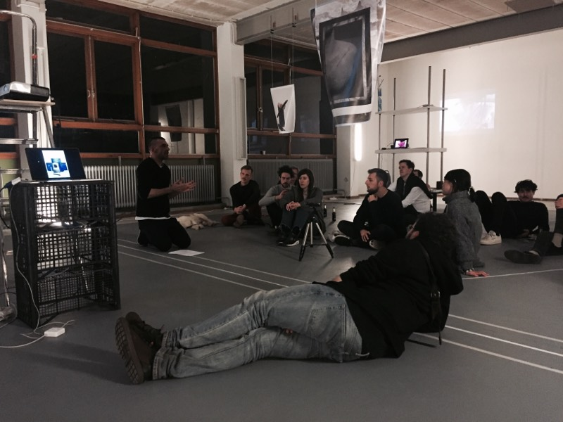
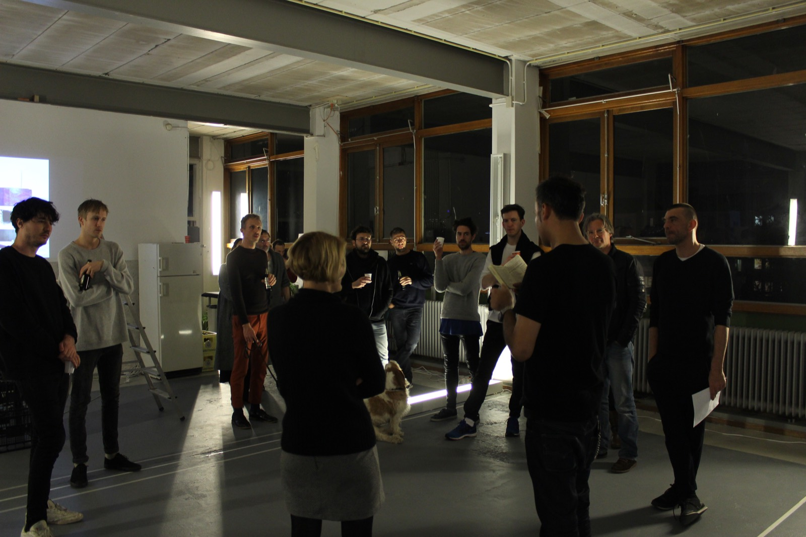
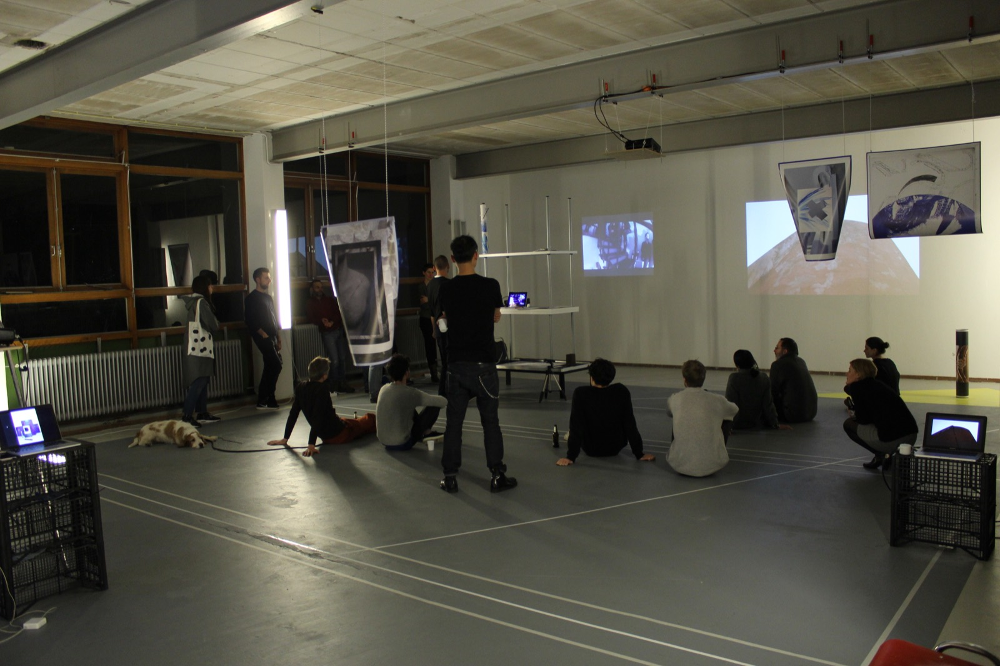
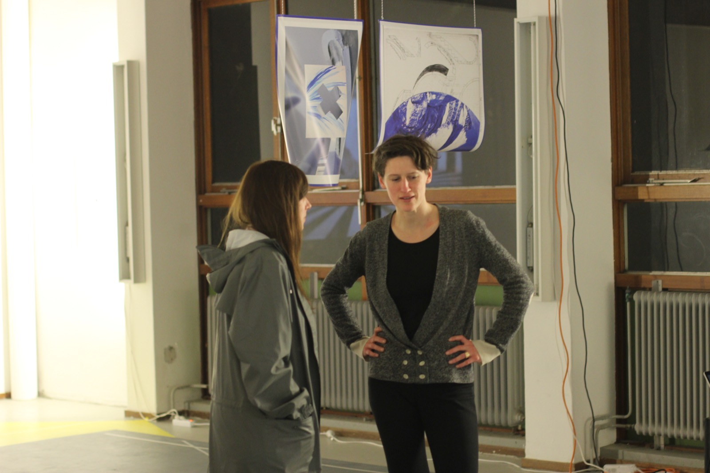

Since several years, Éric Stephany explores the way in which architecture affects us and how, in turn, we project back this affect onto the architectural objects. This for him relates to the phenomenon called empathy, which refers to our tendency to cast back our subjective and emotional life on objects and to identify with them. As a projection of our subjectivity on objects, empathy is essential in understanding the ways in which we inhabit space. Yet, as the artist stresses: in a global context where no single vanishing point and no clear view of the past or future prevails, inhabiting space also implies a certain experience of vertigo, of free fall.
In his most recent works, Éric Stephany has worked with vertical structures such as towers, staircases, and observatories. He concurrently developed an Index of Shadows comprised of a list of ninety-three words translated into collages, bas-reliefs, prints, and sculptures. This series of works explore the way in which body language follows the collapse of linear perspective, and work as metaphors for our current spatial and lexical disorientation. These pieces echo in many ways an essay by Hito Steyerl from 2011, “In Free Fall: A Thought Experiment on Vertical Perspective.”
In this essay, which has accompanied the artist during his residency with La Cocina
, Steyerl points out that “our present moment is distinguished by a prevailing condition of groundlessness.” As she argues, with the advance of new technologies, the paradigm of linear space and time inherited from modernity has shifted into a paradigm of multiple perspectives that exacerbate the modern project and its path of broken progress. Deprived of ground or references, we experience an endless fall that bears no horizon. However, and despite the dizziness it causes, is this condition of groundlessness not also an invitation to question the very necessity of a ground, and what it implies?
With Steyerl’s essay in mind, Éric Stephany will propose a promenade along a drawing displayed on the floor of Goleb’s project space. The drawing mirrors the architectural endeavour behind the design of the building. Using the constructive lines of the building as a choreographic score and as a scenario, the artist will walk us through a selection of his recent works, until his latest experiments in Amsterdam.
Notes
1. Hito Steyerl, “In Free Fall: A Thought Experiment on Vertical Perspective,” published on E-flux in 2011



